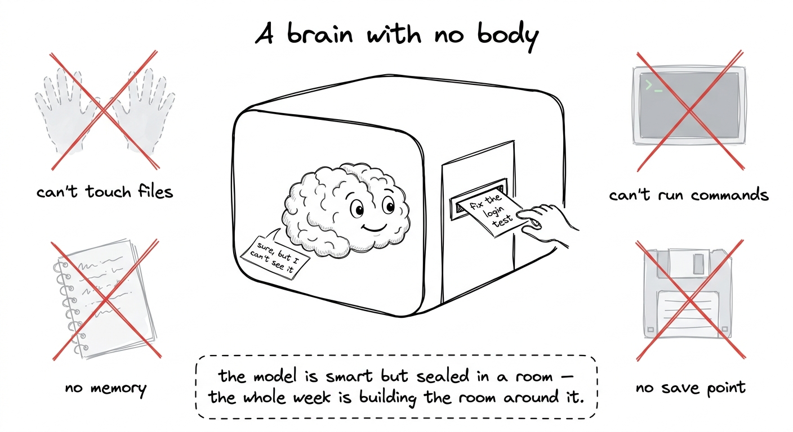
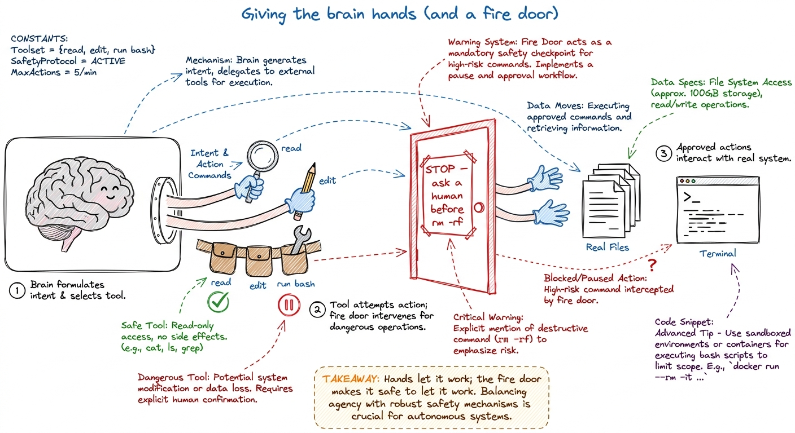
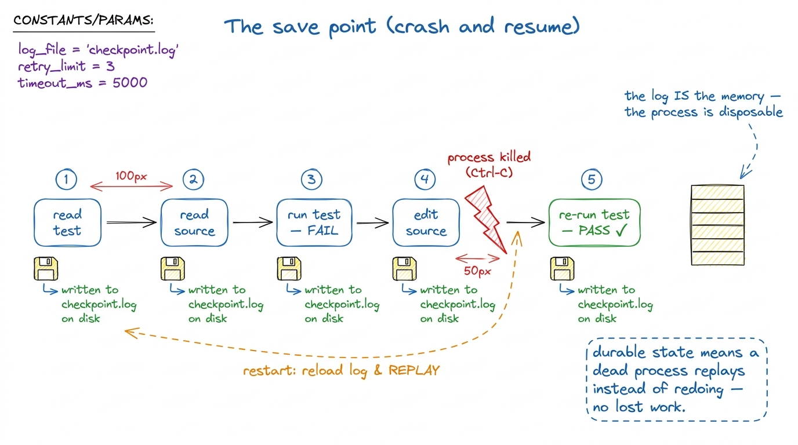
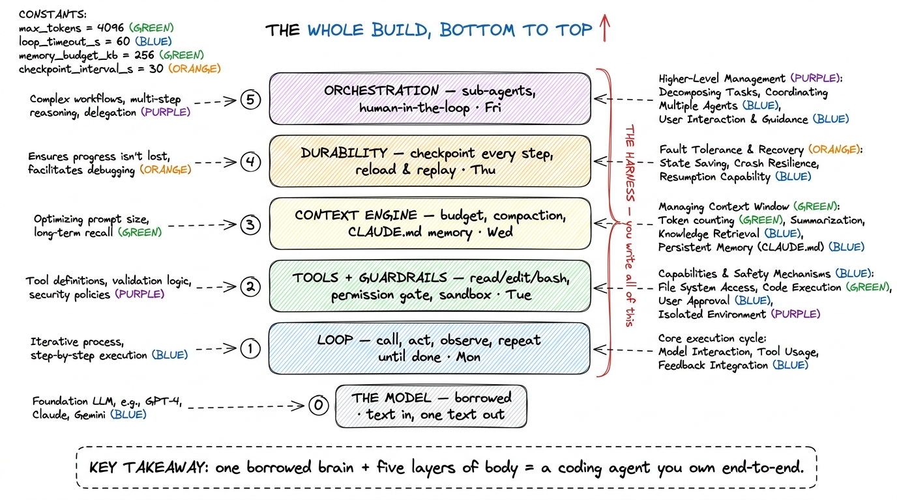
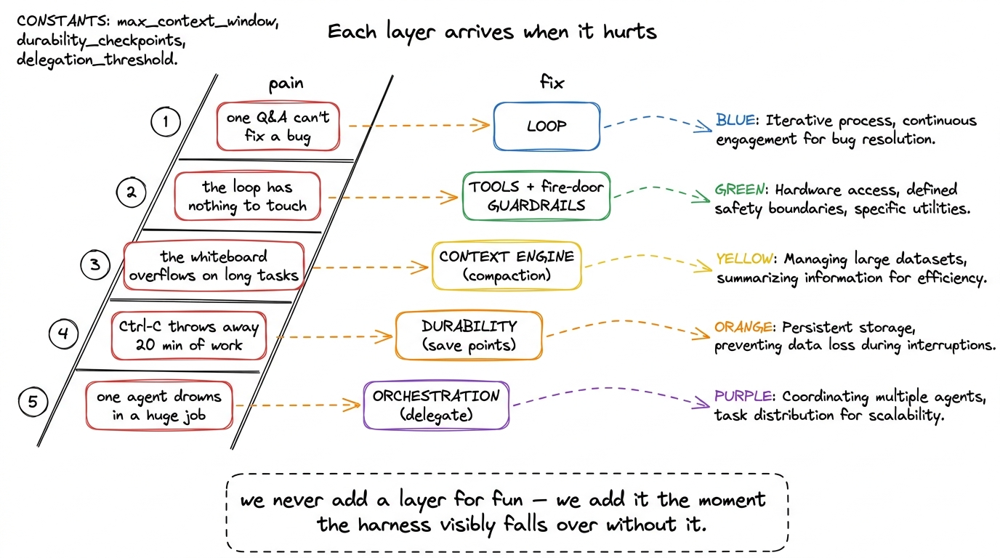

The whole arc: five layers, one harness
By the end of this chapter you can stand at a whiteboard on Monday morning, draw one stacked picture, and tell the cohort the entire five-day story in five minutes — so that every student knows where we are, what we've already built, and what we bolt on next at every hour of the week. This is the map you keep on the wall all week and point back to constantly.
This chapter is about the shape of the whole thing. If the students hold this map in their heads, every later lesson has a home to land in. If they don't, each day feels like a disconnected trick. So you have to own this arc completely — you'll redraw it a dozen times before Friday.
Let's build the story the way you'll build it for them: one plain idea, one picture, then the stack.
Start with the thing at the center: a brain with no body
Strip everything away and there is a language model at the center of what we're building. Text goes in, one chunk of text comes out. That's the entire contract. It has no memory of yesterday. It cannot open a file. It cannot run a command. It cannot even remember what it said thirty seconds ago unless you hand that back to it. It is a pure function: same input, one output, then it forgets everything.

figure rendering · The model as a brilliant colleague sealed in a windowless room: smart,Say that plainly and let it sit. The surprise of the workshop is that the smart part — the model — is the part we don't build. We rent it. Everything we write is the unglamorous room around it. And that room has a name.
The room has a name: the harness
The harness is all the code that wraps the model and turns it from a text-in-text-out function into something that feels like a colleague who gets work done. When you use Claude Code or Cursor or pi, you are mostly using the harness. The model is a commodity underneath — the same one everyone rents. The harness is the product.
We build that harness in exactly five layers, and here is the rule we never break: we never add a layer for its own sake. We add each layer at the exact moment the previous version visibly falls over without it. Every day, the students will feel the pain first, and then we build the thing that fixes the pain. That's the rhythm of the week.
The five layers, one at a time
Let me walk you up the stack the way you'll walk them up it, day by day. Each layer gives the model one power it did not have, and each is roughly one day.
Layer 1 — the loop (Monday). A single question-and-answer is not enough to fix a bug. Real work is reason, act, look at the result, reason again. So the first thing we build is a loop: call the model, let it ask for an action, run that action, feed the result back, and go around again until it says "done." That loop is the heartbeat of every coding agent alive.
Layer 2 — tools and guardrails (Tuesday). A loop is a heartbeat with nothing to do until the model can actually touch your machine. So we give it hands: read_file, write_file, edit_file, run_bash. Each hand is a tool — a small function the model is allowed to call, described to it with a schema so it knows how to call it. But hands that can edit files can also delete them, so in the same breath we build guardrails: the harness pauses and asks a human before anything dangerous, and a sandbox keeps even an approved mistake from spreading.

figure rendering · Layer 2 as hands plus a fire door: the model gets tools to touch yourLayer 3 — the context engine (Wednesday). Every file it reads and every command output it sees gets stuffed back into the conversation so the model can remember it. But the conversation is a fixed-size box — the context window — and on a long task it fills up and overflows. A naive loop just crashes at that wall. So we build a context engine: it watches how full the box is, and when it nears the limit, it summarizes the old turns into a compact digest and keeps going. Alongside it, a memory file (a CLAUDE.md) so the agent starts every run already knowing the shape of your project.
Layer 4 — durability (Thursday). Real agents get interrupted. You hit Ctrl-C, the network blips, the laptop sleeps. If the agent's only memory is a variable in a running program, that interruption throws away a twenty-minute task. So we make the harness write every step to disk — the messages, the tool results, the exact spot in the loop — so that a fresh process can reload the log and replay to precisely where it stopped, instead of starting over.

figure rendering · Layer 4 as save points: every step is written to disk, so a killed proLayer 5 — orchestration (Friday). Some jobs are too big for one whiteboard. "Audit this whole service for security bugs" is really twenty small investigations, and cramming all twenty into one context window makes the agent lose the thread. So the top agent learns to spawn sub-agents — each a fresh copy with its own clean whiteboard — hand each a narrow task, and fold their answers back. Plus a human-in-the-loop gate for the moves that should never be fully automatic.
The one picture that holds the whole week
Now put it all together. This is the drawing you keep on the wall from Monday to Friday, and the single most important figure in the course. Draw it as a stack, bottom to top, and add a checkmark to each layer as the week completes it.

figure rendering · The master map: a borrowed model at the base, then loop, tools+guardraWhy this exact order, and not another
Students will ask why we build loop → tools → context → durability → orchestration in that sequence. The honest answer is the best one: each layer is meaningless until the one below it exists, and each becomes painful to live without the moment the one below it works.
You can't have tools without a loop to call them in. You don't feel the context-window pain until your tools produce enough output to overflow the window. You don't need durability until your tasks run long enough that an interruption actually hurts. And you don't reach for sub-agents until a single agent visibly drowns in a job too big. So the order isn't arbitrary — it's the order in which the pain arrives. We build each fix exactly when the students feel the wound.

figure rendering · The layers as a pain-then-fix ladder: each capability is added at theA whole session, seen through the map
Close the opening with a concrete story so the abstraction becomes a scene. A student opens a terminal in a real project and types: "the login test is failing — find out why and fix it."
The agent reads the test file, then the source it imports (tools, Layer 2). It runs the test with bash, sees the traceback, and reasons about the cause (the loop, Layer 1). Halfway through, the conversation has grown large from all it's read, and the harness quietly compacts the old turns (context engine, Layer 3). It proposes an edit and pauses to ask before touching your code (guardrails, Layer 2). Each step is written to disk as it goes, so if your laptop slept mid-task it would resume, not restart (durability, Layer 4). And on a bigger job — "audit the whole service" — it would have split the work across sub-agents (orchestration, Layer 5).
Every part of that scene is a part they will write. Nothing in it is exotic once each layer is built — and the quiet surprise of the week is how few lines each layer takes.
You can now teach
- The model as a brain with no body — a stateless, hands-free, memory-free function — and why the smart part is the part we rent, not build.
- The harness as the room built around the model, and the slogan that anchors the week: "the model is rented; the agent is built."
- The five layers in order — loop, tools + guardrails, context engine, durability, orchestration — each with a one-line metaphor (cook tasting soup, hands + fire door, whiteboard you erase, video-game save point, manager delegating).
- The one stacked map, drawn live and left on the wall all week, with a green checkmark added each day.
- Why the order is forced: each layer arrives exactly when the previous version visibly falls over — the pain-then-fix ladder.
- The production link: these same five layers are the real anatomy of Claude Code, pi, Cursor, and Hermes — the students build the actual architecture, just smaller.